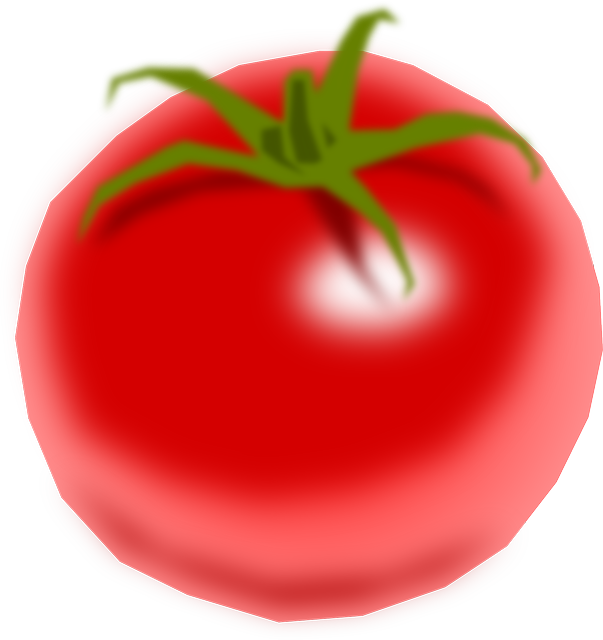

<link rel="import" href="../../bower_components/polymer/polymer.html">
<link rel="import" href="../../bower_components/paper-button/paper-button.html">
<link rel="import" href="../../bower_components/iron-icons/av-icons.html">
<link rel="import" href="../../bower_components/iron-icon/iron-icon.html">
<link rel="import" href="../pomodoro-logic/pomodoro-logic.html">

<dom-module id="the-pomodoro">
  <template>
    <style>
      :host {
        display: block;
        text-align: center;
      }

      img {
        max-width: 100px;
      }

      .learn-more {
        font-size: 0.7em;
      }

      .time-left {
        font-size: 4em;
        margin: 0.2em 0.1em;
      }

      .message {
        font-size: 2em;
        margin: 0.5em 0.2em;
      }

      .controls {
        margin: 0.7em;
      }

      .pause{
        margin-right: 2em;
      }

      paper-button {
        text-transform: none;
      }
    </style>

    <pomodoro-logic
      id="logic"
      task="{{task}}"
      running="{{running}}"
      short-break="{{shortBreak}}"
      tasks-complete="{{tasksComplete}}"
      minutes="{{m}}"
      seconds="{{s}}"
    ></pomodoro-logic>

    

    <div class="learn-more">
      Save time with the <a href="http://pomodorotechnique.com/" target="blank"> Pomodoro Technique</a>
    </div>

    <div class="time-left">
      {{m}} : <template is="dom-if" if="{{lessThan(s, 10)}}">0</template>{{s}}
    </div>
    
    <div class="message">
      
      <template is="dom-if" if="{{running}}">
        
        <template is="dom-if" if="{{task}}">
          Working on {{currentTask}}
        </template>

        <template is="dom-if" if="{{!task}}">
          
          <template is="dom-if" if="{{shortBreak}}">
            Short break time!
          </template>
          <template is="dom-if" if={{!shortBreak}}>
            Woo! Time for a long break!
          </template>
          
        </template>

      </template>
    </div>

    <div class="start-control" on-tap="start">
      <paper-button raised><iron-icon icon="av:play-arrow"></iron-icon>Start Task</paper-button>
    </div>
    <div class="controls">
      <paper-button raised class="pause" on-tap="pause"><iron-icon icon="av:pause"></iron-icon>Pause</paper-button>
      <paper-button raised class="restart" on-tap="restart"><iron-icon icon="av:replay"></iron-icon>Restart</paper-button>
    </div>

  </template>

  <script>
    Polymer({

      is: 'the-pomodoro',

      properties: {
        currentTask: {
          type: String,
          value: "task"
        }
      },
      lessThan: function(variable, number){
        return variable < number;
      },
      start: function(){
        this.$$("#logic").start();
      },
      pause: function(){
        this.$$("#logic").pause();
      },
      restart: function(){
        this.$$("#logic").restart();
      }

    });
  </script>
</dom-module>
